Más1.º de la revisión
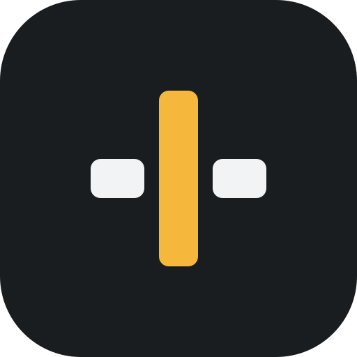
96
48
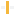
16
El logo es el botón de más: entrenar es sumar un poco cada vez.
Tres direcciones minimalistas, hechas desde cero. En las tres, el logo sale de un botón real de la app, no de una inicial ni de un objeto de gimnasio. Elige una o dime qué mezclar.
Mezcla posible: el logo y los botones de Más, con el aro vacío de Dupla para la serie pendiente.



El logo es el botón de más: entrenar es sumar un poco cada vez.
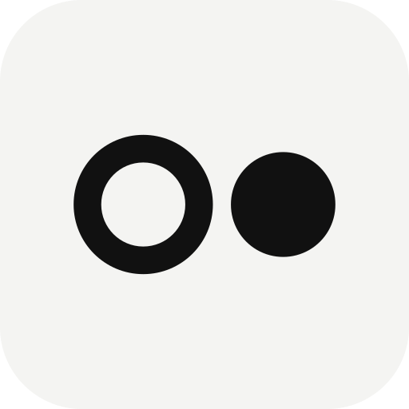
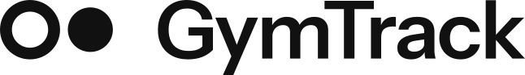
Un aro vacío y un disco lleno: lo planeado y lo hecho, tu entrenador y tú.
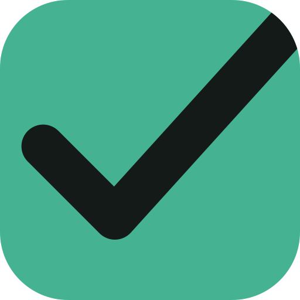
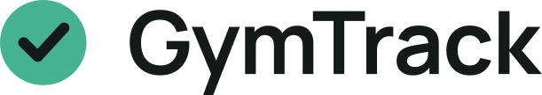
El logo es el botón que tocas al terminar una serie: un círculo menta con un visto.
| Más | Dupla | Visto | |
|---|---|---|---|
| Símbolo | Signo más de dos tonos: un trazo ámbar que cruza un menos | Aro vacío junto a un disco lleno, más chico | Círculo menta con un visto tinta |
| Paleta | Grafito oscuro con ámbar; el modo gimnasio es el principal | Blanco y negro; violeta solo para foco y avisos | La menta del PRD, clara |
| Botones | Rectos, radio 8. El bloque de más y menos es el protagonista | Pastillas: contorno es «por hacer», relleno es «hecho» | Redondeados, radio 16, amables |
| Movimiento | Seco: las cifras giran como contador en 100 ms | Directo: las cosas se llenan, sin escala | Suave: el visto se dibuja en 200 ms |
| Letra | Archivo + JetBrains Mono | Instrument Sans + DM Mono | Manrope + IBM Plex Mono (las del proyecto) |
| Riesgo | Que recuerde a una cruz de farmacia (por eso nunca va en verde, rojo ni dentro de un círculo) | Dos círculos es una forma muy simple y ya la usan otras marcas | El visto es el signo universal de «listo» |
| Costo de construir | Cambia letras y paleta del proyecto | Cambia letras y paleta del proyecto | El más bajo: usa los tokens que ya existen |
El logo es el botón de más: un kilo más, una repetición más.
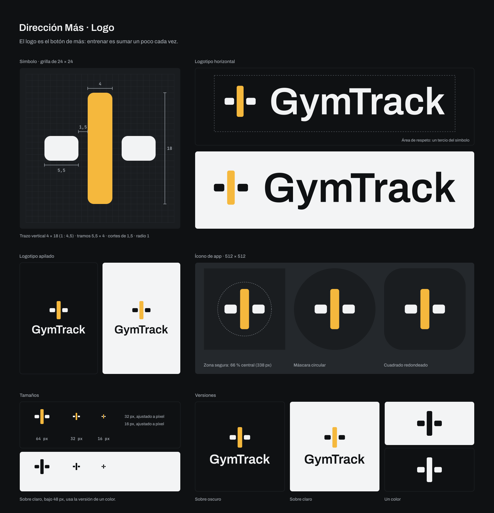
#1A1D20, probado en una grilla de lanzador.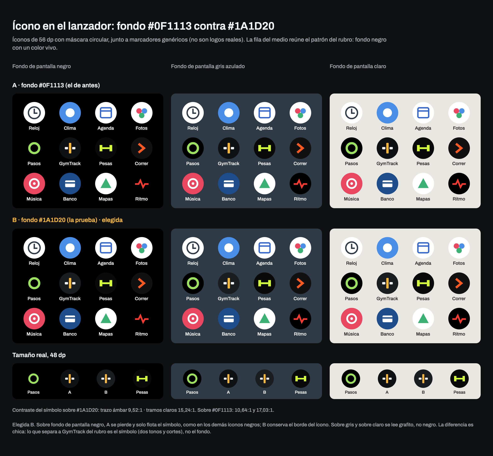
Lo planeado y lo hecho. Contorno es «por hacer», relleno es «hecho».
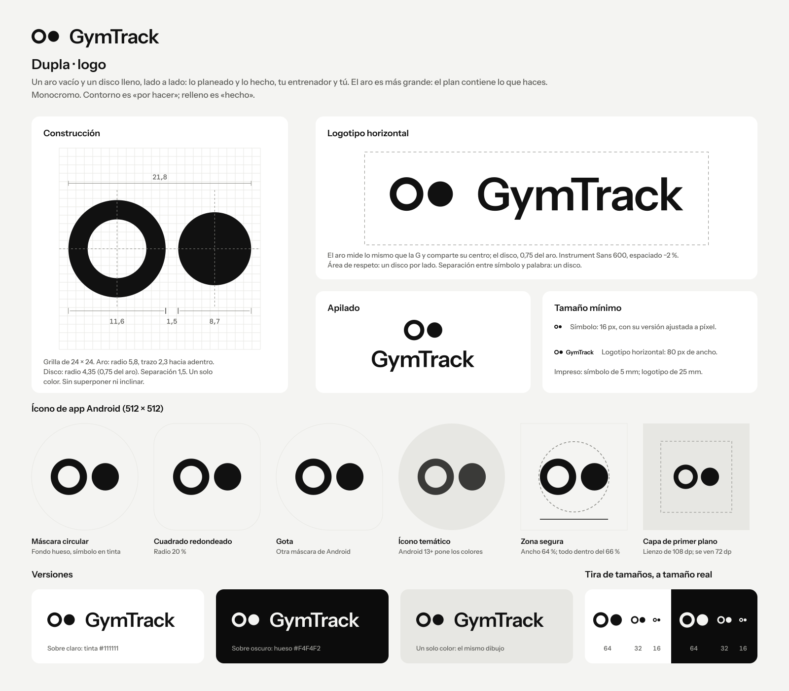
El logo es el botón de serie hecha, en la menta del PRD.
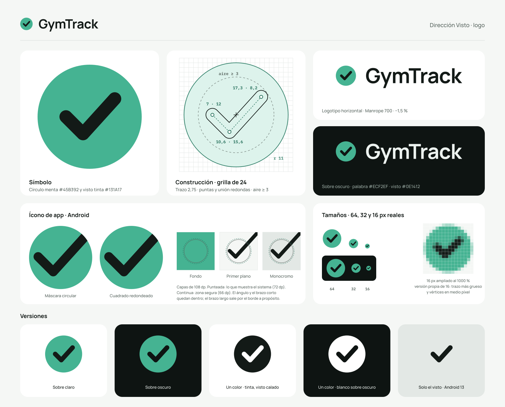